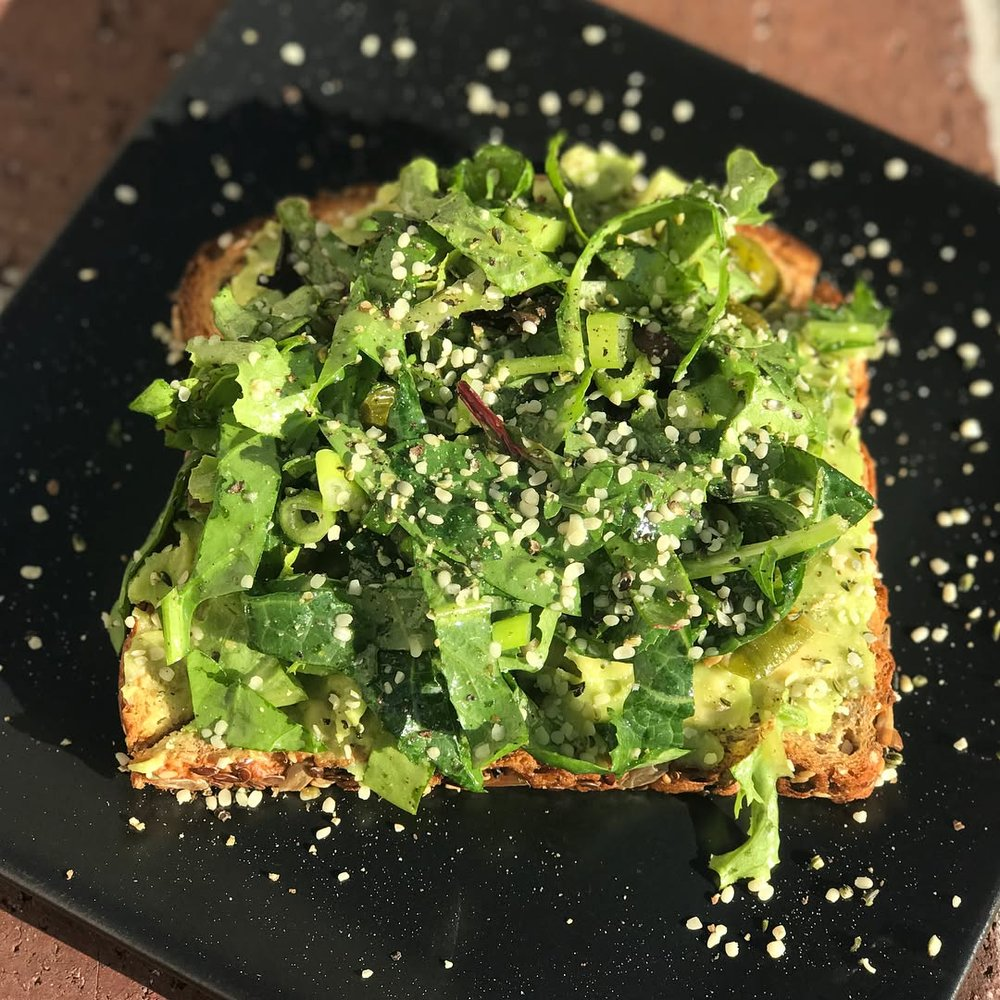

SUN JUN 24from the archive
Back Porch Comedy, Laura Sanders, Kate Mason
8pm
$5
☀️Happy Sunday! ☀️ Tonight’s special: Avo Toast on Organic Good Seed Bread. Topped with roasted shishito peppers (from our garden!) and lemon herb salad and finished with hemp seeds and fresh black pepper! IT’S ALSO COMEDY NIGHT!! Join us @ 8 for Back Porch Comedy featuring Laura Sanders and Kate Mason. 5 bucks! See ya there! 😎 #standupcomedy #sundayfunday #vegan